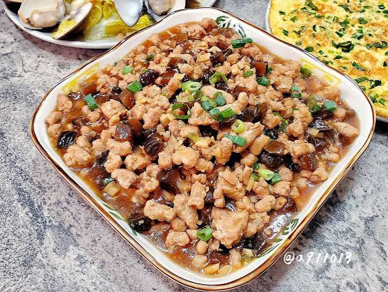

• 豬絞肉：300 克（建議選用肥瘦比例 3:7 的梅花肉或五花肉，口感最滑順不乾柴）。
• 脆瓜 / 花瓜罐頭：1 罐（約 170 克，連同湯汁一起備用）。
• 紅蔥頭：5 至 6 顆（切末，這是古早味香氣的核心）。
• 蒜頭：3 至 4 瓣（切末）。
• 油蔥酥：1 大匙（可增加醬汁濃郁度，若無則可用新鮮紅蔥頭代替）。
• 醬油：2 大匙（建議選用純釀造醬油）。
• 米酒：1 大匙（去腥增香）。
• 冰糖：1 茶匙（依花瓜罐頭甜度微調）。
• 白胡椒粉：少許（提味必備）。
• 五香粉：1 小撮（增添古早味層次，可依喜好省略）。
• 水：約 200 至 250 毫升（需蓋過食材）。
1. 處理食材
• 將花瓜從罐頭取出，與花瓜湯汁分開。
• 花瓜切成約 0.5 公分的小丁，保留一點脆度口感會更好。
2. 煸炒絞肉出油
• 熱鍋後不需放油（或僅放極少許油），直接放入豬絞肉。
• 開中小火將絞肉炒散，煸炒至肉色變白且逼出豬油，表面微帶金黃焦香。
3. 爆香辛香料
• 利用鍋中逼出的豬油，放入紅蔥頭末與蒜末。
• 轉小火炒至紅蔥頭變金黃、散發濃郁香氣。
4. 嗆鍋上色
• 加入花瓜丁略微翻炒。
• 沿鍋邊淋入米酒與醬油嗆出醬香，接著加入冰糖、白胡椒粉、五香粉與油蔥酥拌炒均勻。
5. 燉煮入味
• 倒入整罐花瓜湯汁與清水（水量剛好淹過肉燥即可）。
• 大火煮滾後轉最小火，蓋上鍋蓋慢燉 20 至 30 分鐘，讓油脂與醬汁乳化濃稠即完成。